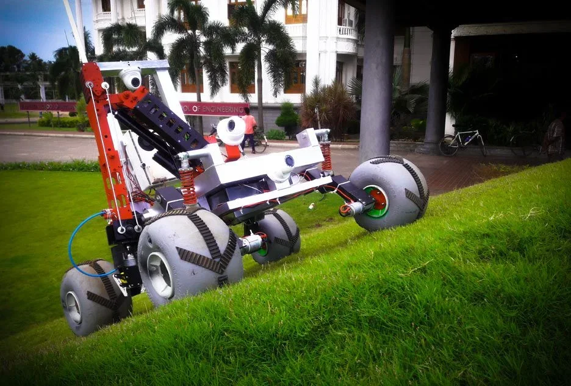

Phoenix II: one rover, fifteen people
United Kingdom Rover Challenge · Manchester · 2016
A planetary rover brings many engineering disciplines into one machine. I led a 15-person team building Phoenix II for the 2016 United Kingdom Rover Challenge.

A shared goal for a multidisciplinary team
Phoenix II was built for the United Kingdom Rover Challenge in Manchester. The project brought autonomous navigation and manipulation—the ability to move through an environment and interact with objects—into a student-built planetary rover.
As team lead, I worked across a 15-person multidisciplinary team. The challenge was to bring mechanical design, electronics, control, and software together around a single functioning platform.
The important work happens between the parts
A rover’s arm depends on its power and control system. Its movement depends on the way its wheels, sensors, and software fit together. A successful component only becomes useful when the surrounding system can work with it.
Phoenix II made that relationship concrete for me. Leading the project meant looking beyond individual tasks to the whole machine and the people building it. That systems perspective still shapes how I approach robot deployment and infrastructure today.
Working on something similar?
If this project connects with a problem or idea you’re exploring, I’d enjoy comparing notes.